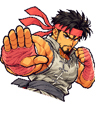
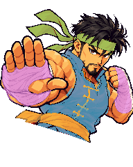

Original
Masked alternate

Material boundaries

Single rest portrait. Ivory tunic, crimson wraps/headband, charcoal trim. Original pixels outside the material mask stay identical. Breathing in the game uses a shader on this single image; this static study isolates recolor quality.


Cyan: tunic · Pink: wraps · Green: headband · Gold: trim/belt. First contour pass; inspect boundaries around fingers, face, shoulder, stitching and sash.